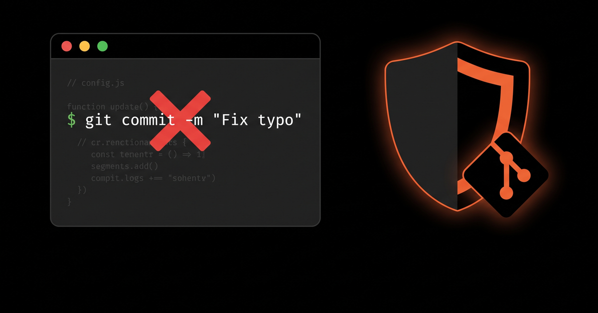

Installation
This workflow combines three Claude Code Templates components. Install all three with one command:
npx claude-code-templates@latest \
--hook security/secret-scanner \
--hook git/conventional-commits \
--skill security/secrets-managementThis installs both hook scripts into .claude/hooks/, registers them in .claude/settings.json, and adds the skill to .claude/skills/.
The Problem: Two Different Ways a Commit Goes Wrong
Most "bad commit" incidents fall into one of two buckets:
- A secret slips in — an API key, a database URL, a token pasted in during a debugging session — and gets committed before anyone notices.
- The history turns to noise — commit messages like
"fix"or"wip"that make changelog generation and semantic versioning impossible to automate.
Asking Claude nicely in CLAUDE.md to "never commit secrets" or "always use conventional commits" helps, but it's a suggestion Claude can miss under pressure. Hooks turn both rules into code that runs on every single git commit, no exceptions.
How the Hooks Actually Intercept a Commit
Both hooks register on the PreToolUse event with a matcher for the Bash tool. Every time Claude Code is about to run a Bash command, it sends the tool call as JSON on the hook script's stdin:
{
"hook_event_name": "PreToolUse",
"tool_name": "Bash",
"tool_input": {
"command": "git commit -m \"add login form\"",
"description": "Commit the new login form"
},
"tool_use_id": "...",
"cwd": "/path/to/project"
}The hook script inspects tool_input.command, and if it isn't a git commit call, exits immediately with code 0 so the command runs unmodified. If it is a commit, the script decides whether to allow or deny it — and it can deny in two equivalent ways: exiting with code 2 (stderr becomes the reason shown to Claude), or exiting 0 while printing a JSON object with permissionDecision: "deny". Both hooks in this workflow use the JSON form:
{
"hookSpecificOutput": {
"hookEventName": "PreToolUse",
"permissionDecision": "deny",
"permissionDecisionReason": "❌ Invalid commit message format..."
}
}Because secret-scanner and conventional-commits both match the Bash tool, Claude Code registers them as two independent entries in the PreToolUse array — installing the second doesn't overwrite the first, it appends to it. Every Bash call runs both, and if either one denies, the commit is blocked. A leaked key and a malformed message are caught by the same event, by two hooks that never have to know about each other.
1. secret-scanner — Catch Credentials Before They Commit
The scanner matches the outgoing command against 30+ provider-specific patterns — not generic "looks like a password" heuristics, but the actual token shapes providers issue:
SECRET_PATTERNS = [
(r'AKIA[0-9A-Z]{16}', 'AWS Access Key ID', 'high'),
(r'sk-ant-api\d{2}-[A-Za-z0-9\-_]{20,}', 'Anthropic API Key', 'high'),
(r'sk-[a-zA-Z0-9]{48,}', 'OpenAI API Key', 'high'),
(r'AIza[0-9A-Za-z\-_]{35}', 'Google API Key', 'high'),
(r'sk_live_[0-9a-zA-Z]{24,}', 'Stripe Live Secret Key', 'critical'),
(r'ghp_[0-9a-zA-Z]{36}', 'GitHub Personal Access Token', 'high'),
(r'hf_[a-zA-Z0-9]{34,}', 'Hugging Face Token', 'high'),
# ...and 20+ more: GitLab, Vercel, Supabase, Replicate, Groq, Databricks, Azure...
]When a match is found in the staged diff, the hook denies the commit and tells Claude exactly what was matched and why — nudging it toward environment variables instead of silently stripping the line.
2. conventional-commits — Keep the History Machine-Readable
This hook only activates on commands containing git commit, extracts the message from the -m flag (or a heredoc-style multi-line message), and checks it against the Conventional Commits grammar:
type(scope): description
Types: feat, fix, docs, style, refactor, perf, test, chore, ci, build, revertA message like "fix" or "updated stuff" gets denied with the exact rule and two or three corrected examples in the reason string, so Claude can immediately retry with fix: resolve memory leak in parser instead of guessing.
| Commit attempt | Result |
|---|---|
git commit -m "fix" |
❌ Denied — missing description |
git commit -m "Added new feature" |
❌ Denied — no type: prefix |
git commit -m "feat(auth): add JWT refresh" |
✅ Allowed |
3. secrets-management — The Skill That Fills the Gap the Hooks Leave Open
Here's the part that trips people up: a hook can only react to a hardcoded secret that's already been typed. It can't tell you where that secret should have lived instead. That's not a job for a deterministic script — it depends on your stack, your CI provider, and whether you're rotating credentials or provisioning them for the first time. That's exactly the kind of judgment call a Skill is built for.
hooks field in its frontmatter; instead, Claude reads its description and decides whether it's relevant to the current conversation, the same way it decides whether to reach for any other piece of context. Hooks enforce; skills advise.
So when secret-scanner blocks a commit containing a Stripe key, Claude has the secrets-management skill available to reach for — and its guidance is specific per backend:
# AWS Secrets Manager
aws secretsmanager create-secret \
--name production/database/password \
--secret-string "super-secret-password"
# HashiCorp Vault
vault kv put secret/database/config username=admin password=secret
# GitHub Actions
echo "API Key: ${{ secrets.API_KEY }}"The skill also documents rotation, least-privilege access, and masking secrets in CI logs — the practices that keep a fixed leak from becoming a recurring one.
The Workflow, End to End
Here's what actually happens when you ask Claude Code to commit a change that contains a hardcoded key:
git commit -m "feat: add stripe integration"2. Both PreToolUse hooks fire in parallel.
conventional-commits allows the message — it's well-formed. secret-scanner finds sk_live_... in the diff and denies.3. The commit is blocked. Claude receives the scanner's reason and, with the
secrets-management skill in context, replaces the hardcoded key with process.env.STRIPE_SECRET_KEY and adds it to .env (already gitignored).4. Claude retries the commit. This time both hooks allow it, and it lands in your history clean — no secret, properly typed message.
Nobody had to review a diff to catch the leak, and nobody had to fix the commit message after the fact. The two hooks make the enforcement automatic; the skill makes the fix correct.
Where Each Piece Belongs
| Component | Type | Trigger | Job |
|---|---|---|---|
secret-scanner |
Hook | Every git commit |
Deny commits containing credential patterns |
conventional-commits |
Hook | Every git commit |
Deny non-conventional commit messages |
secrets-management |
Skill | Claude's judgment | Guide the fix once a secret is caught |
Conclusion
None of these three components is complicated on its own. What makes this a workflow rather than three separate installs is that they cover each other's blind spots: the scanner catches the leak, the commit-message hook keeps history usable, and the skill supplies the fix the hooks can't compute. Install all three and your git workflow gets a safety net that works the same way at 2am as it does in a careful code review.
Created by Daniel Ávila